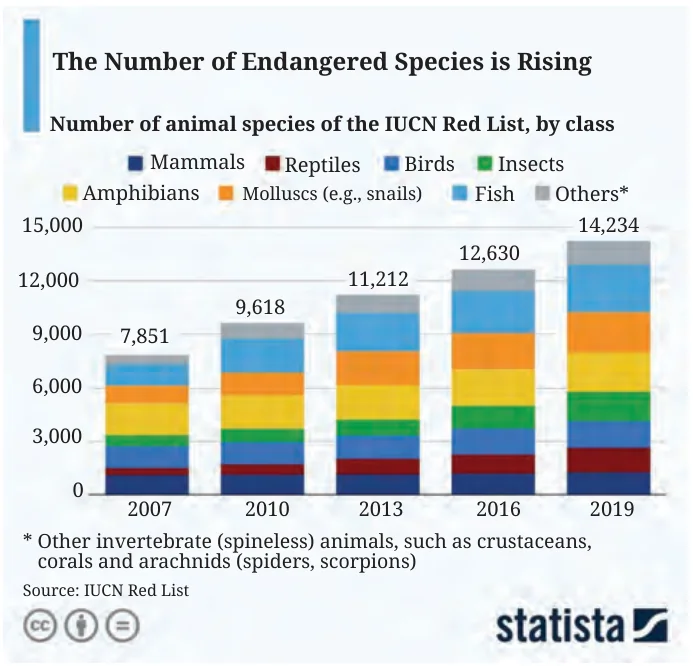
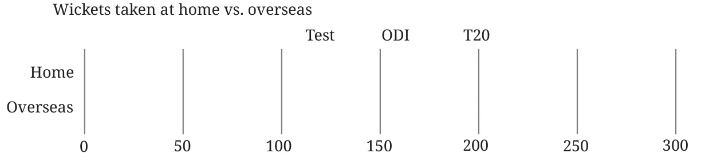
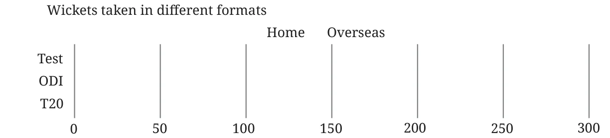

- The following stacked column chart shows the number of animal species in the IUCN Red List, by class, over time.

- What does the number 14,234 on the top of the column 2019 represent?
- Approximately how many reptile species were in the list in 2016?
- Which class(es) of species have seen a relatively small increase in count between 2007 and 2019?
-
Test ODI T20 Home 62 100 32 Overseas 172 49 71 The wickets taken by a bowler in International Cricket matches till 2025 are shown in the table. Complete the given stacked bar charts (the bar lengths can be approximate),
- comparing the total wickets taken at home vs. overseas:

- The total wickets taken in each format:

- comparing the total wickets taken at home vs. overseas:
Chapter 10 · How Quantities Combine Understanding Data